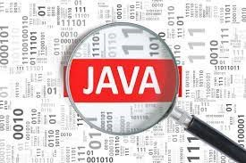

What is Java?

Java is a programming language and a platform. Java is a high level, robust, object-oriented and secure programming language. Java was developed by Sun Microsystems (which is now the subsidiary of Oracle) in the year 1995. James Gosling is known as the father of Java. Before Java, its name was Oak. Since Oak was already a registered company, so James Gosling and his team changed the name from Oak to Java. Platform: Any hardware or software environment in which a program runs, is known as a platform. Since Java has a runtime environment (JRE) and API, it is called a platform.
What should I learn before Java?
Prerequisites. You must know at least the basics of how to use a computer, and should be able to start a command line shell. If you are new to programming then Introduction to Programming is strongly recommended. If you already know C++ or any other Object-Oriented language, Java should be easy to pick up.
Can any one learn Java?
Java is a well-structured, object-oriented language, which can be considered easy for beginners. You can master it quite rapidly, as there are many processes that run automatically. You don't have to delve into “how the things work in there” too deep.